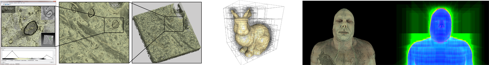
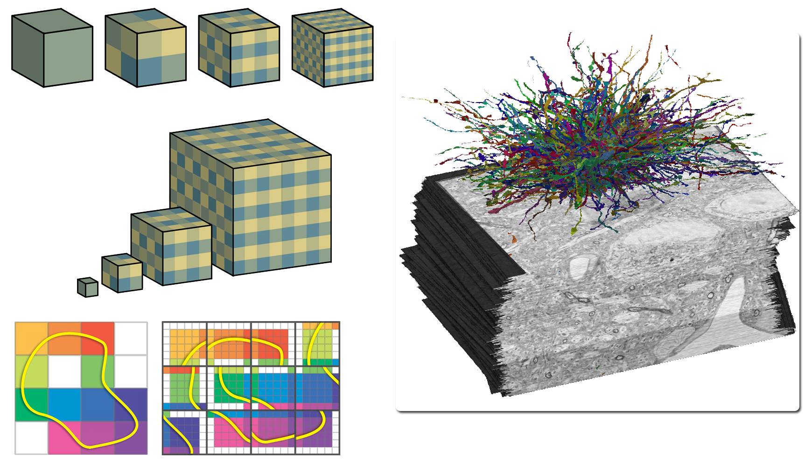
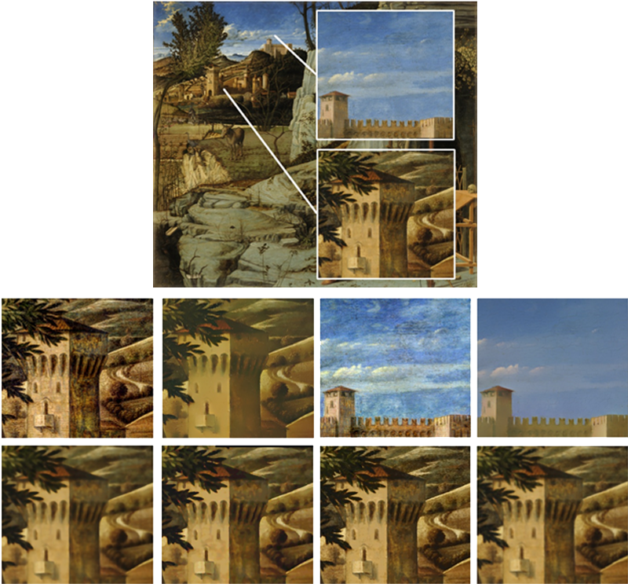
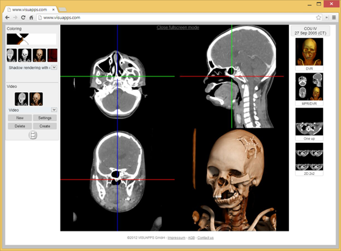

GPU-Based Large-Scale Visualization
SIGGRAPH Asia 2013 - Course Notes

Date
Tuesday, 19 November14:15 - 18:00
Room S222
Course Speakers
Markus Hadwiger, King Abdullah University of Science and TechnologyJens Krüger, University of Duisburg-Essen
Johanna Beyer, Harvard University
Stefan Bruckner, University of Bergen
Course Description
Recent advances in image and volume acquisition as well as computational advances in simulation have led to an explosion of the amount of data that must be visualized and analyzed. Modern techniques combine the parallel processing power of GPUs with out-of-core methods and data streaming to enable the interactive visualization of giga- and terabytes of image and volume data. A major enabler for interactivity is making both the computational and the visualization effort proportional to the amount of data that is actually visible on screen, decoupling it from the full data size. This leads to powerful display-aware multi-resolution techniques that enable the visualization of data of almost arbitrary size. The course consists of two major parts: An introductory part that progresses from fundamentals to modern techniques, and a more advanced part that discusses details of ray-guided volume rendering, novel data structures for display-aware visualization and processing, and the remote visualization of large online data collections. You will learn how to develop efficient GPU data structures and large-scale visualizations, implement out-of-core strategies and concepts such as virtual texturing that have only been employed recently, as well as how to use modern multi-resolution representations. These approaches reduce the GPU memory requirements of extremely large data to a working set size that fits into current GPUs. You will learn how to perform ray-casting of volume data of almost arbitrary size and how to render and process gigapixel images using scalable, display-aware techniques. We will describe custom virtual texturing architectures as well as recent hardware developments in this area. We will also describe client/server systems for distributed visualization, on-demand data processing and streaming, and remote visualization. We will describe implementations using OpenGL as well as CUDA, exploiting parallelism on GPUs combined with additional asynchronous processing and data streaming on CPUs.Level
IntermediateIntended Audience
We target researchers and practitioners in visualization and computer graphics that want to learn recent GPU techniques and hardware/API capabilities for implementing visualization systems that scale to very large data. The course will also be interesting for people interested in processing and rendering gigapixel images in a scalable manner.Course Prerequisites
Course participants should have a basic understanding of how GPUs work and how they are programmed using standard graphics APIs such as OpenGL or Direct3D, and a basic understanding of general-purpose GPU programming using CUDA or OpenCL.Syllabus
Introduction, Basics of Scalable Visualization and GPU Virtual Memory Architectures
After introducing the course, I will describe GPU-based visualization techniques, focusing on GPU ray-casting for large volume data. We will look at fundamental data structures such as grids and trees, and discuss how to perform traversal on GPUs. We will discuss the basics of rendering large images and volumes and out-of-core approaches, and I will describe the basic ray-casting optimization techniques of empty space skipping and early ray termination with a focus on large data. I will give an overview of virtual texturing on GPUs and how virtual memory hierarchies can be employed for the interactive visualization of data of almost arbitrary size.Speaker
Markus Hadwiger, King Abdullah University of Science and Technologyemail: markus.hadwiger @ kaust.edu.sa
Slides
pdfBio
Markus Hadwiger is an Assistant Professor in computer science at King Abdullah University of Science and Technology (KAUST) and head of the High-Performance Visualization group at the Geometric Modeling and Scientific Visualization Center at KAUST. Before joining KAUST, he was a Senior Researcher at the VRVis Research Center in Vienna. He received a PhD in computer science from the Vienna University of Technology in 2004. He is a co-author of the book Real-Time Volume Graphics. His research interests include petascale visual computing and scientific visualization, volume rendering, large-scale image processing, and GPU algorithms and architecture.Scalable Volume Visualization Architectures and Applications
 I will start by explaining some advanced techniques for large-scale ray-casting, including multi-level page tables for accessing terabyte-sized volumes on the GPU, and demonstrate modern empty space skipping techniques for increasing rendering performance. In the second part of my talk, I will introduce and compare different volume processing architectures for handling large data. Data streaming and on-demand construction of 3D data blocks allows to circumvent expensive pre-processing and allows to process and stream data entirely on-demand, thereby limiting the amount of data that has to be handled to the visible subset on the screen. In the last part of my talk I will present higher-level applications that are built on top of current GPU-based visualization systems for large-scale data. I will present a system for query-guided visual analysis of large volumetric electron microscopy data, built on top of a powerful petascale visualization system.Speaker
Johanna Beyer, Harvard Universityemail: jbeyer @ seas.harvard.edu
Slides
pdfBio
Johanna Beyer is a postdoctoral fellow in the School of Engineering and Applied Sciences at Harvard University. Before joining Harvard, she was a postdoctoral fellow at the Geometric Modeling and Scientific Visualization Center at King Abdullah University of Science and Technology. Her research interests include large-data visualization, parallel visualization, and GPU-based volume rendering for neuroscience and neurobiology. She received a PhD in computer science from the Vienna University of Technology in 2010.GPU-Based Ray-Guided Volume Rendering Algorithms
GPU-Based Ray-Guided Volume Rendering algorithms have been demonstrated to be the most efficient approaches for interactive volume rendering of large data. For such data sets, the data movement strategies from background memory such as disk or network to main memory and ultimately to GPU memory play an important role. In this talk I will take a closer look at data storage and layout strategies. I will detail a number of design aspects in ray-guided volume rendering, demonstrating that a whole-system design viewpoint achieves superior results as compared to individual optimizations.
Speaker
Jens Krüger, University of Duisburg-Essenemail: jens.krueger @ uni-due.de
Slides
pdfResources
MeasurementsBio
Jens Krüger finished his PhD in 2006 at the Technische Universität München. After Post Doc positions in Munich and at the Scientific Computing and Imaging (SCI) Institute he became Research Assistant Professor at the University of Utah. In 2009 he joined the Cluster of Excellence to head the Interactive Visualization and Data Analysis group. Since 2013 he is Chair of the High Performance Computing group at the University of Duisburg-Essen. He also holds an adjunct professor title of the University of Utah and is a principal investigator in the Intel Visual Computing Institute.Display-Aware Visualization and Processing, and PDF-Based Multi-Resolution Representations
 I will give an overview of display-aware techniques for the visualization and processing of gigapixel images and large-scale volume data, where the computational effort is proportional to the actually visible data instead of to the original data size. I will describe a novel probabilistic data structure called sparse pdf maps/volumes that encodes the information of high-resolution data in a multi-resolution pyramid using probability density functions (pdfs) of local pixel or voxel neighborhoods. This enables the accurate visualization of high-resolution data with arbitrary transfer functions at any output resolution. Sparse pdf maps/volumes also enable image processing operations such as local Laplacian filters, smoothed local histogram filters, and bilateral filters to be computed in a display-aware, and thus scalable, manner.Speaker
Markus Hadwiger, King Abdullah University of Science and Technologyemail: markus.hadwiger @ kaust.edu.sa
Slides
pdfBio
Markus Hadwiger is an Assistant Professor in computer science at King Abdullah University of Science and Technology (KAUST) and head of the High-Performance Visualization group at the Geometric Modeling and Scientific Visualization Center at KAUST. Before joining KAUST, he was a Senior Researcher at the VRVis Research Center in Vienna. He received a PhD in computer science from the Vienna University of Technology in 2004. He is a co-author of the book Real-Time Volume Graphics. His research interests include petascale visual computing and scientific visualization, volume rendering, large-scale image processing, and GPU algorithms and architecture.Remote and Web-based Visualization of Data Collections
I will present approaches for the visualization of large data collections using GPU-based rendering. Data repositories in disciplines such as medicine or biology grow in number and size which means that the cost of data transfer frequently becomes prohibitive and image-based solutions are the only viable alternative. The talk will provide an overview of software architectures and solutions for such scenarios. In particular, I will focus on approaches which employ web technology to enable interactive remote rendering and show how they can be combined with client-side interfaces to provide high-fidelity visualization applications.
Speaker
Stefan Bruckner, University of Bergenemail: stefan.bruckner @ uib.no